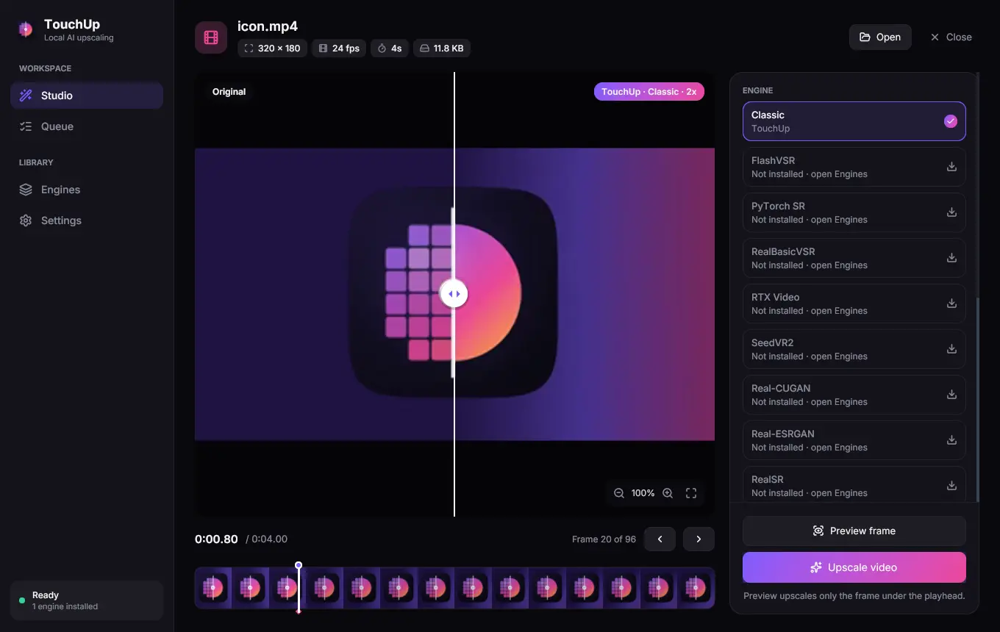
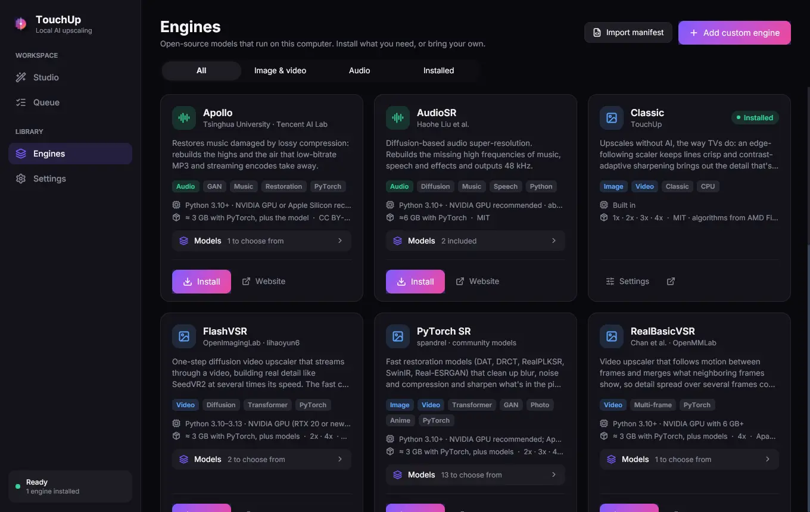

TouchUp installs and drives open-source engines like Real-ESRGAN, SeedVR2 and AudioSR, and takes care of everything around them: frames, soundtracks, queues and before/after comparisons. Nothing is uploaded.
For Windows, macOS and Linux · Free and open source, Apache 2.0
drag to compare
The studio
Scrub to any moment of a video and upscale just that frame. A split view with zoom and pan puts the original next to the result, so you pick the engine and settings on one frame, not on an hour of footage.

Photos, drawings and anime art, by 2x, 3x or 4x. Images go straight to the queue, with no preview step.
To 720p, 1080p, 1440p or 4K. Frames stream through the engine a segment at a time, and the original soundtrack is kept.
Choose 5–30 seconds on the waveform, enhance only that, then play both versions and compare their spectrograms.
Features
TouchUp doesn't upscale anything itself. It does the work that makes command-line upscalers pleasant to use.
A built-in catalog installs with one click. Add any other command-line upscaler from a form or a JSON manifest.
Engines with large weights list their models; download only the ones you want, with checksums verified.
2x, 3x or 4x, or 720p to 4K by the short side, so portrait video works too. Results are resized exactly with Lanczos.
Jobs run one at a time with live progress, the engine's latest output, cancel and retry, and a warning when an engine goes quiet.
Times an engine's settings on two seconds of your video, keeps each that's faster and saves the winners.
Python engines stop with "out of memory" instead of spilling into system memory, which is often ten times slower. One setting turns spilling back on.
Deinterlace, deblock, denoise and deband before the engine; sharpen, brightness, contrast, warmth, saturation and film grain after.
Every failure has a Copy button: what failed, the version, system, GPU setting, Python and everything the engine printed.
From Bulgarian to Ukrainian, each with its own number formats, plus dark and light themes and "Open with TouchUp" on every desktop.
Engines
Each engine installs into its own folder, Python engines into a private environment with a Python TouchUp downloads for them. Each keeps its own license, shown on its card.

Missing one? Add custom engine takes a program and its arguments with placeholders like {input}, {output} and {scale}.
How it works
Videos go through image engines a segment at a time, straight from the decoder to the encoder, so the work folder never holds more than a few hundred megabytes, however long the video. Everything runs on this computer with the engines you install.